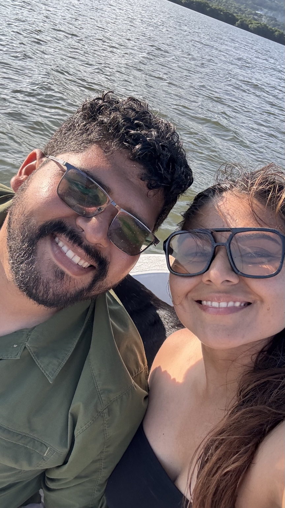
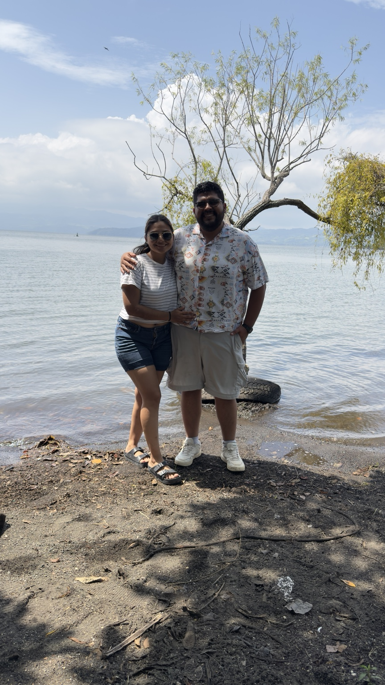
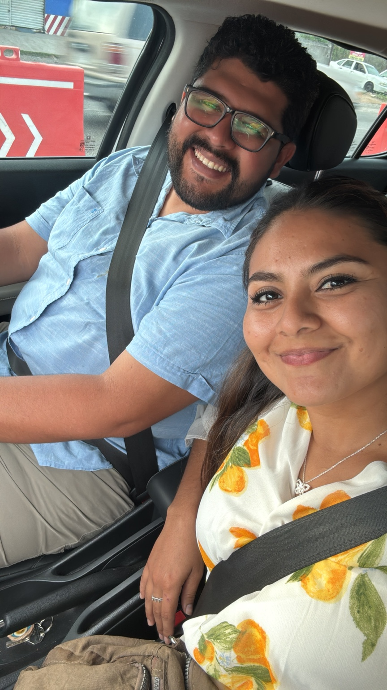
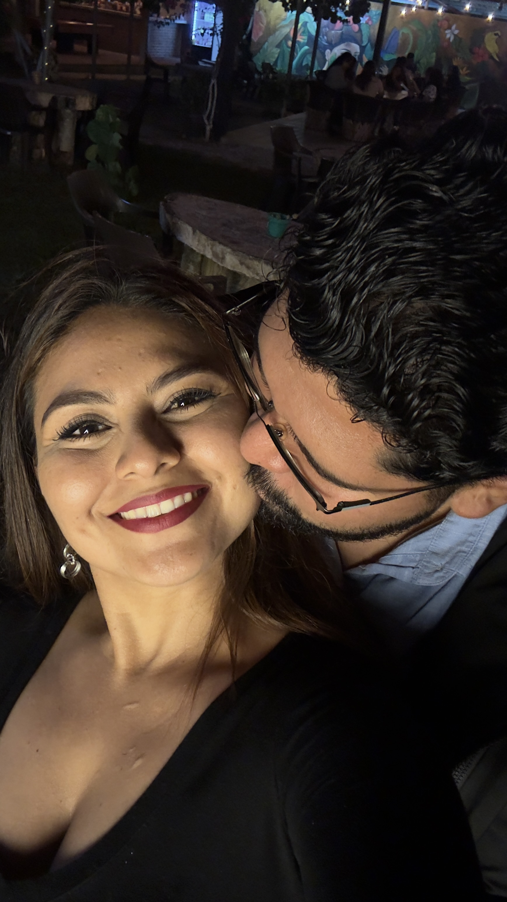
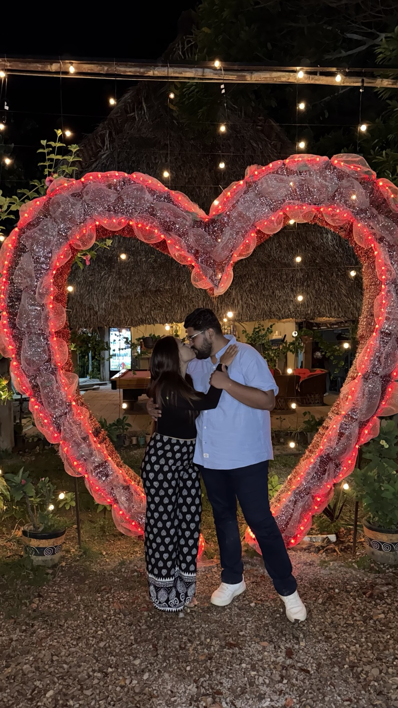
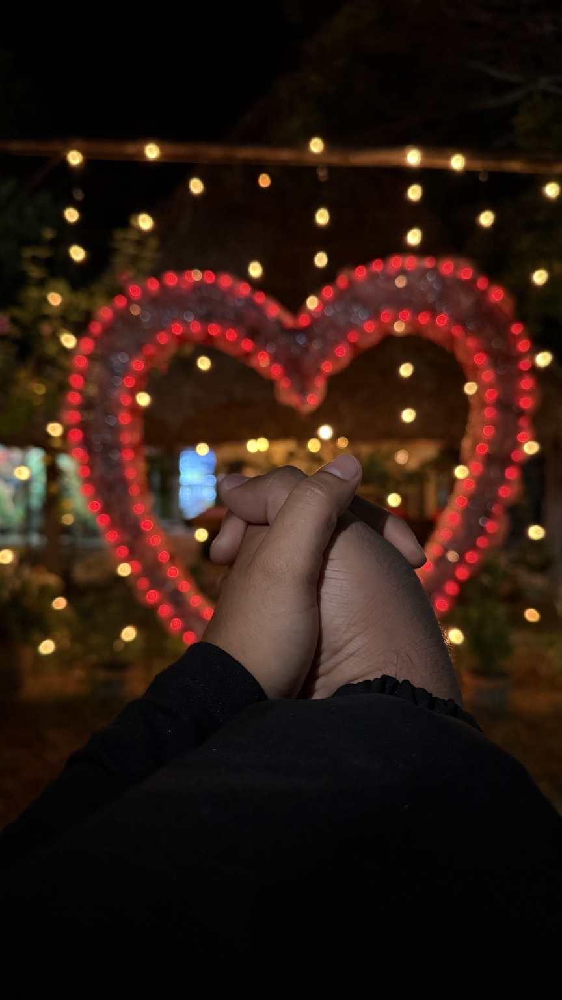
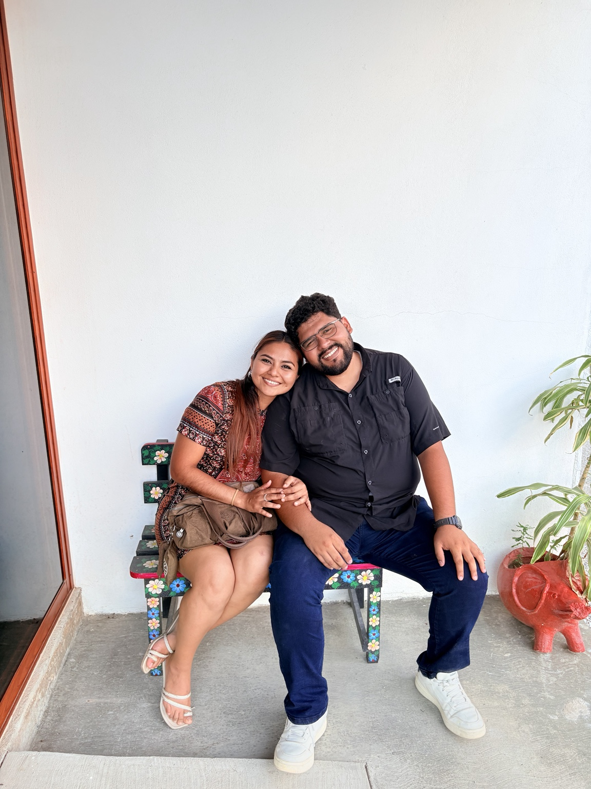
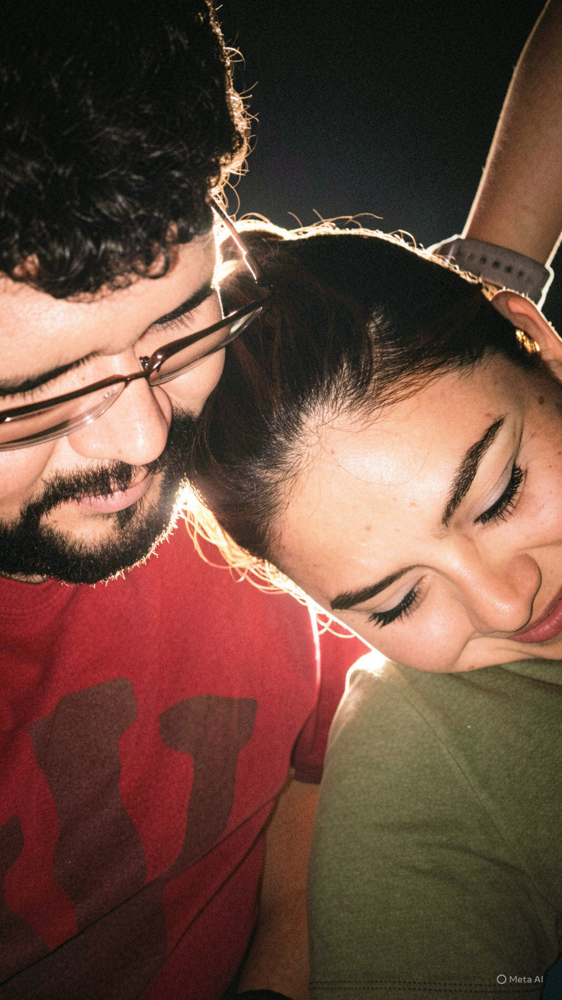

Una historia que apenas comienza
Jorge
& Jani
“Estuvimos tanto tiempo cerca uno del otro, pero el ahora es el tiempo que Dios predestinó para que nuestros caminos finalmente se cruzaran para nunca más separarse.”
DESCUBRIR ↓“Estuvimos tanto tiempo cerca uno del otro, pero el ahora es el tiempo que Dios predestinó para que nuestros caminos finalmente se cruzaran para nunca más separarse.”
DESCUBRIR ↓Ocho recuerdos guardados aquí. No como fotografías perfectas, sino como pequeñas pruebas de todo lo que estamos viviendo juntos.








Toca una pregunta. Después podemos poner las respuestas reales y convertirlo en un pequeño juego entre ustedes.
Jorge & Jani · 07.06.2026